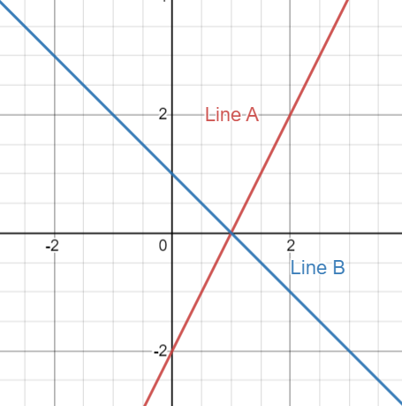

Historically, the matrix was not invented for linear transformation, but for a more practical problem: solving linear systems. In this unit, we are going to cover everything you need to know when solving a linear system. Then I will explain why it is better to solve them using matrices.
Let’s start from the simplest linear system you can imagine: line intercepts.
Suppose we have two lines in Cartesian plane, line A and line B:

Here are their equations:
Now the classic questions are: where do these two lines meet? And do they meet at all?
It is fairly easy to see in the graph that these two lines do intersect and they intersect at the point (1,0). To solve this algebraically is also trivial, you can do a substitution and solve it in under a minute.
If you can solve this, congratulation! You pass the grade 9 math exam! Clearly, this method is not a good way of solving a system of linear equations. Why? I will give you two reasons:
First, how do we solve the question with more than 2 dimensions?
Well, you might say we introduce more than two variables! a, b, c, d{static}. That is absurd because we only have 26 letters and if we use notation like \(a_1, a_2\), the equation will be not only long but also nasty to read.
Second, how do we know if there is a solution?
Assume you are working on this 100 dimensions linear system, it took you 3 days to realize that there is no solution! How frustrated is that!
So, Let’s sum up. We need our new notation to have two things: One, It has to look good, precise, clear, and elegant. Two, it has to have an easy way to check whether there is a solution or not.
Luckily, we have matrix. The matrix notation solve the above questions perfectly and even gave us more details about the system. I will show you the way to write a system of linear equations using matrix.
Let’s take the above equations as an example:
The left side of the equations are some variables with different coefficients, so let’s start from there.
Instead of writing all the x and y in our equations, we can put all of them at the side as a vector:
then we can write only the coefficients in front of variables as a matrix:
To get \(2x-y\ =\ 2\) and \(x+y\ =\ 1\) back, we can do a matrix multiplication:
then we can rewrite the right hand side as a vector too:
So we ended up with a matrix multiply on an unknown vector equals to a vector:
We can write this in a more abstract form:
Where \(\color{red}{A}\) is a matrix, \(\pmb{x}\) is the unknown vector that we are trying to solve, and \(\pmb{b}\) is a vector.
It is obvious to see that the matrix notation is way easier than the original one since you don’t have to write down the variables over and over again. Moreover, it is much faster to do elimination. We will discuss the detail of Gauss elimination in the next section.